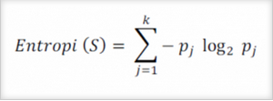
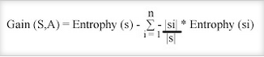
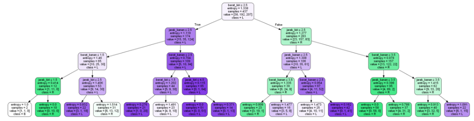

Decision Tree Menggunakan Python¶

A. Pengertian¶
Decision tree atau pohon keputusan adalah alat pendukung keputusan yang menggunakan model keputusan yang berbentuk seperti pohon. Decision tree memetakan berbagai alternatif yang mungkin untuk mengatasi suatu masalah, dan terdapat juga faktor-faktor kemungkinan yang dapat mempengaruhi alternatif tersebut beserta estimasi akhirnya jika memilih alternatif yang ada. Decision tree merupakan salah satu metode yang bisa digunaan untuk menampilkan algoritma dimana hanya berisi pernyataan kontrol bersyarat.
Decision tree merupakan struktur seperti bagan alur dimana setiap simpul internal mewakili kemungkinan yang ada pada atribut, setiap cabang mewakili hasil dari kemungkinan tersebut, dan setiap simpul daun mewakili label kelas (keputusan diambil setelah menghitung semua atribut). Jalur dari root ke daun mewakili aturan klasifikasi.
Decision Tree dapat dilinearisasi menjadi aturan keputusan, dimana hasilnya adalah isi dari simpul daun, dan kondisi di sepanjang jalur membentuk konjungsi dalam klausa if. Secara umum, bentuk aturannya seperti:
Jika kondisi1 dan kondisi2 dan kondisi3, maka hasil.
Aturan keputusan dapat dihasilkan dengan membuat aturan asosiasi dengan variabel target di sebelah kanan. Decision tree juga dapat dilihat sebagai model generatif aturan induksi dari data empiris. Decision tree optimal kemudian didefinisikan sebagai pohon yang menyumbang sebagian besar data, sambil meminimalkan jumlah level atau "pertanyaan".
B. Perhitungan dengan Algoritma C45¶
Rumus untuk menghitung Entrophy¶

S : Himpunan kasus
k : Jumlah partisi S
Pj : Probabilitas yang didapat dari jumlah (Ya/Tidak) dibagi total kasus
Rumus untuk menghitung Gain¶

S : Himpunan kasus
A : Atribut
n : jumlah partisi atribut A
|Si| : jumlah kasus pada partisi ke-i
|S| : jumlah kasus dalam S
C. Keunggulan dan Kekurangan Decision Tree¶
Keunggulan :¶
- Mudah dimengerti dan dipahami. Orang-orang bisa memahami model decision tree dengan penjelasan singkat.
- Memiliki nilai walaupun dengan sedikit data yang rumit. Wawasan penting dapat dihasilkan berdasarkan para ahli yang menggambarkan situasi dan preferensi mereka untuk hasil.
- Membantu menentukan nilai terburuk, terbaik, dan nilai yang diharapkan untuk berbagai skenario.
- Menggunakan model kotak putih jika hasil diberikan oleh model.
- Dapat dikombinasikan dengan teknik pengambilan keputusan lainnya.
Kekurangan :¶
- Tidak stabil, yang berarti bahwa perubahan kecil dalam data dapat menyebabkan perubahan besar dalam struktur decision tree optimal.
- Relatif tidak akurat. Banyak prediktor lain memiliki kinerja yang lebih baik dengan data serupa. Hal ini dapat diatasi dengan mengganti decision tree tunggal dengan forest of decision tree acak. Namun hutan yang acak tidak semudah memahami decision tree tunggal.
- Untuk data yang termasuk variabel kategorikal dengan jumlah level yang berbeda, perolehan informasi dalam decision tree cenderung mendukung atribut dengan level yang lebih banyak.
- Perhitungan bisa menjadi sangat kompleks, terutama jika banyak nilai tidak pasti dan / atau jika banyak hasil dikaitkan.
D. Implementasi Decision Tree Using Python¶
Pada implementasi kali ini data yang digunakan sebagai studi kasus adalah : Balance-scale dataset
Berikut adalah langkah-langkah dan Source Code contoh studi kasus Decision Tree using Python.
langkah pertama¶
untuk dapat mengimplementasikan algoritma, install terlebih dahulu paket
- sklearn dengan mengikuti perintah menggunakan pip :
python -m pip install scikit-learn
- numpy :
python -m pip install numpy
- seaborn :
python -m pip install seaborn
- pydotplus :
python -m pip install pydotplus
- pandas :
python -m pip install pandas
setelah menginstall semua library, maka langsung import ke python
import pandas as pd from sklearn.tree import DecisionTreeClassifier from sklearn.model_selection import train_test_split from sklearn import metrics from sklearn.metrics import accuracy_score import seaborn as sns from sklearn.tree import export_graphviz from sklearn.externals.six import StringIO from IPython.display import Image from sklearn.tree import export_graphviz import pydotplus import numpy as np
langkah kedua¶
Langkah selanjutnya adalah mengimportkan data yang akan digunakan (dan pastikan data berada dalam satu folder yang sama dengan file program yang akan dibuat)
data = pd.read_csv('balance_scale.csv')
langkah ketiga¶
Setelah selesai mengimportkan data, maka berikan source code untuk menampilkan data dan menampilkan info mengenai data tersebut
#menampilkan data data.head()
#melihat info data data.info()
langkah keempat¶
Langkah berikutnya adalah memilih kolom uji untuk selanjutnya akan dihitung hasilnya
zero_not_accepted = ['berat_kiri','jarak_kiri','berat_kanan','jarak_kanan'] for col in zero_not_accepted: data[col]= data[col].replace(0,np.NaN) mean = int(data[col].mean(skipna=True)) data[col] = data[col].replace(np.NaN,mean)
langkah kelima¶
Setelah memilih data ujinya, langkah selanjutnya adalah membagi data training dan data testing dengan data testing sebesar 30%
X = data.iloc[:,0:3] #memilih objek data X dengan array y = data.iloc[:,3] #memilih objek data y dengan array #build model & train data X = data[['berat_kiri','jarak_kiri','berat_kanan','jarak_kanan']] #objek uji y = data['seimbang'] #objek kelas #split data X_train, X_test, y_train, y_test = train_test_split(X, y, test_size = 0.3, random_state=0)
langkah keenam¶
Berikutnya adalah menentukan Entropy datanya dengan source code sebagai berikut
clf = DecisionTreeClassifier(criterion="entropy", max_depth=4) #entropy dengan 4 cabang clf = clf.fit(X_train,y_train) y_pred = clf.predict(X_test)
langkah ketujuh¶
Menentukan simpul root, simpul perantara, dan simpul leaf dari data yang telah diketahui nilai entropy dan ini merupakan langkah terakhir dalam tahapan mencari decision tree dari kasus ini. sorce code nya adalah sebagai berikut
feature_cols = ['berat_kiri','jarak_kiri','berat_kanan','jarak_kanan'] #kolom yang diuji #mengelompokkan data ke dalam kelas dot_data = StringIO() export_graphviz(clf, out_file=dot_data, filled=True, rounded=True, special_characters=True,feature_names = feature_cols,class_names=['B','R','L']) #visualisai pohon keputusan graph = pydotplus.graph_from_dot_data(dot_data.getvalue()) #menyimpan hasil visualisasi graph.write_png('keseimbangan.png') Image(graph.create_png())
dan pada tahap ini akan memunculkan gambar yaitu grafik pohon atau decision tree-nya seperti berikut
